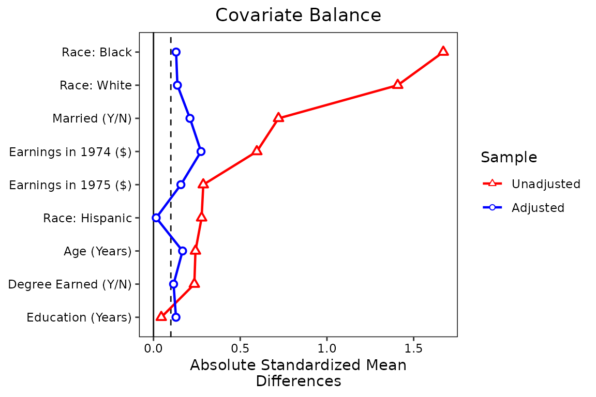
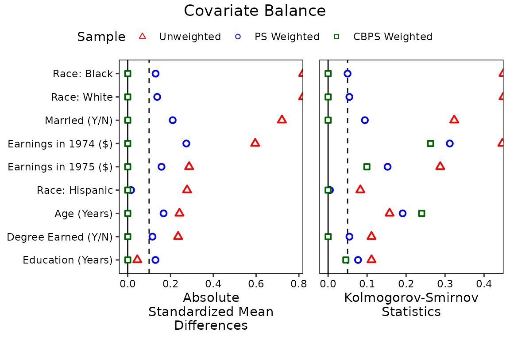

Using `love.plot()` To Generate Love Plots
Noah Greifer
2023-07-28
Source:vignettes/love.plot.Rmd
love.plot.RmdThis is a guide on how to use love.plot() to its fullest
potential, taking advantage of all of its many options and features.
Other vignettes have described the basics of love.plot(),
but this guide goes more in depth. See the help file for
love.plot() with ?love.plot for the full
documentation.
This document will only go over the options for
love.plot() with binary treatments. Many of the options
apply to continuous and multi-category treatments and clustered and
multiply imputed data as well. I’ll use the Lalonde data and
WeightIt for all examples. WeightIt performs a
variety of weighting methods, including propensity score weighting,
which, for simplicity, will be the focus here.
First, let’s load in the data set and estimate the weights.
library(cobalt)
data("lalonde", package = "cobalt")
w.out1 <- WeightIt::weightit(
treat ~ age + educ + married + nodegree + race + re74 + re75,
data = lalonde, estimand = "ATE", method = "ps")Next, because in this example we want to display standardized mean
difference for all of the covariates, let’s set the global
binary option to "std" so we don’t have to
type it every time.
set.cobalt.options(binary = "std")The most basic way to use love.plot() is simply to call
it as you would bal.tab() on the output of the
preprocessing function (in this case, weightit).
love.plot(w.out1)We could also have supplied other arguments that would normally go in
bal.tab()1:
#This produces the same output as the prior block but with
#the additional covariates included in the formula.
love.plot(treat ~ age + educ + married + nodegree + race + re74 + re75 +
I(age^2) + I(educ^2), data = lalonde, weights = get.w(w.out1),
method = "weighting", estimand = "ATE")Let’s start with some basic customizations. First, we’ll remove the
propensity score from the balance display by setting
drop.distance = TRUE. We’ll change the order the covariates
so they are displayed in descending order of their unadjusted mean
differences by setting var.order = "unadjusted". We’ll
display the absolute mean difference by setting abs = TRUE.
We’ll also add some lines to make the change in balance clearer by
setting line = TRUE. Finally, we’ll add a threshold line at
0.1 by setting thresholds = c(m = .1).
love.plot(w.out1,
drop.distance = TRUE,
var.order = "unadjusted",
abs = TRUE,
line = TRUE,
thresholds = c(m = .1))The plot is already looking much better and more informative, but
let’s change a few things to make it more professional. First, we’ll
change the names of the variables so they are easier to read. We can
create a vector of new variable names and then supply that to the
var.names argument in love.plot(). If it would
be a burden to type out all the names, you can use the
var.names() function to create a CSV file (i.e.,
spreadsheet) that can be customized and loaded back into R to be used
with love.plot(). See ?var.names for more
information. Because we only have a few variable names, we’ll just
manually create a vector of names.
new.names <- c(age = "Age (Years)",
educ = "Education (Years)",
married = "Married (Y/N)",
nodegree = "Degree Earned (Y/N)",
race_white = "Race: White",
race_black = "Race: Black",
race_hispan = "Race: Hispanic",
re74 = "Earnings in 1974 ($)",
re75 = "Earnings in 1975 ($)"
)We’ll change the colors of the points and lines with the
colors argument so they aren’t the ggplot2
defaults. We’ll also change the shape of the points to further clarify
the different samples using the shapes argument.
love.plot(w.out1,
drop.distance = TRUE,
var.order = "unadjusted",
abs = TRUE,
line = TRUE,
thresholds = c(m = .1),
var.names = new.names,
colors = c("red", "blue"),
shapes = c("triangle filled", "circle filled"))
Finally, let’s makes some changed to the legend. First, we’ll rename
the samples to be “Unweighted” and “PS Weighted” using the
sample.names argument. Second, we’ll change the plot limits
to give more padding on the right side using the limits
argument. Third, to save some space, we’ll move the legend into the plot
using the position argument, and we’ll give it a border. We
can do this last step using ggplot2 syntax because the
love.plot output is a ggplot object. We need
to load in ggplot2 first to do this.
library(ggplot2)
love.plot(w.out1,
drop.distance = TRUE,
var.order = "unadjusted",
abs = TRUE,
line = TRUE,
thresholds = c(m = .1),
var.names = new.names,
colors = c("red", "blue"),
shapes = c("triangle filled", "circle filled"),
sample.names = c("Unweighted", "PS Weighted"),
limits = c(0, .82),
position = c(.75, .25)) +
theme(legend.box.background = element_rect(),
legend.box.margin = margin(1, 1, 1, 1))This is starting to look like a publication-ready plot. There are
still other options you can change, such as the title, subtitle, and
axis names, some of which can be done using love.plot
arguments and others which require ggplot2 code. Sizing the
plot and making sure everything still looks good will be its own
challenge, but that’s true of all plots in R.
Perhaps we want to display balance for a second set of weights, maybe using a different method to estimate them, like the covariate balancing propensity score [CBPS; Imai and Ratkovic (2014)] that is popular in political science. These can be easily added (but we’ll have to use the formula interface to set multiple weights).
w.out2 <- WeightIt::weightit(
treat ~ age + educ + married + nodegree + race + re74 + re75,
data = lalonde, estimand = "ATE", method = "cbps")
love.plot(treat ~ age + educ + married + nodegree + race + re74 + re75,
data = lalonde, estimand = "ATE",
weights = list(w1 = get.w(w.out1),
w2 = get.w(w.out2)),
var.order = "unadjusted",
abs = TRUE,
line = TRUE,
thresholds = c(m = .1),
var.names = new.names,
colors = c("red", "blue", "darkgreen"),
shapes = c("triangle filled", "circle filled", "square filled"),
sample.names = c("Unweighted", "PS Weighted", "CBPS Weighted"),
limits = c(0, .82)) +
theme(legend.position = c(.75, .3),
legend.box.background = element_rect(),
legend.box.margin = margin(1, 1, 1, 1))We can see there is little benefit to using these weights over
standard logistic regression weights, although significant imbalance
remains for both sets of weights. (Try using entropy balancing by
setting method = "ebal" in weightit() if you
want to see the power of modern weighting methods.)
Perhaps balance on mean differences is not enough, and you want to
display balance on KS statistics. In general, this is good practice;
mean differences don’t tell the whole story. We can simply request
stats = ks.statistics" in love.plot(). We
could also request "variance.ratios" to get variance
ratios, another potentially useful balance measure. Below we’ll use
similar formatting to request KS statistics:
love.plot(treat ~ age + educ + married + nodegree + race + re74 + re75,
data = lalonde, estimand = "ATE",
stats = "ks.statistics",
weights = list(w1 = get.w(w.out1),
w2 = get.w(w.out2)),
var.order = "unadjusted",
abs = TRUE,
line = TRUE,
thresholds = c(m = .1),
var.names = new.names,
colors = c("red", "blue", "darkgreen"),
shapes = c("triangle filled", "circle filled", "square filled"),
sample.names = c("Unweighted", "PS Weighted", "CBPS Weighted"),
limits = c(0, .45)) +
theme(legend.position = c(.75, .25),
legend.box.background = element_rect(),
legend.box.margin = margin(1, 1, 1, 1))Below, we’ll put two plots side-by-side, one for mean differences and
one for KS statistics. This can be done by requesting multiple values
for the stats argument (e.g., with
stats = c("mean.diffs", "ks.statistics")). To reduce
clutter, we’ll remove the lines by setting lines = FALSE.
To prevent the axis titles from bumping into each other, we’ll set
wrap = 20, where 20 is the number of characters at which to
wrap to the next line. When stats has length greater than
1, the output is not longer a ggplot object and can’t be
manipulated using ggplot2 syntax. This limits some of the
options we have to customize it, but the available options using
love.plot()’s syntax are still useful. We’ll move the
legend to the top of the plot to save space using the
position argument. We can give the plots different limits
by entering a named list into the limits argument. We can
do the same for the thresholds argument. Finally, by
setting var.order = "unadjusted", we ensure that the
variable order is the same in both plots (which it will be regardless)
and ordered by the first balance statistic (in this case, mean
differences).
love.plot(treat ~ age + educ + married + nodegree + race + re74 + re75,
data = lalonde, estimand = "ATE",
stats = c("mean.diffs", "ks.statistics"),
weights = list(w1 = get.w(w.out1),
w2 = get.w(w.out2)),
var.order = "unadjusted",
abs = TRUE,
line = FALSE,
thresholds = c(m = .1, ks = .05),
var.names = new.names,
colors = c("red", "blue", "darkgreen"),
shapes = c("triangle filled", "circle filled", "square filled"),
sample.names = c("Unweighted", "PS Weighted", "CBPS Weighted"),
limits = list(m = c(0, .82),
ks = c(0, .45)),
wrap = 20,
position = "top") 
Below we recreate the plot in West et al. (2014), which uses a simple theme and
avoids color, which can be important for publication. In addition, the
plot has labels and puts the legend in a different position. We can
include those features by including an argument to labels
and by supplying a theme object to themes:
love.plot(w.out1, abs = FALSE,
stats = c("mean.diffs", "variance.ratios"),
drop.distance = TRUE,
var.names = new.names,
thresholds = c(v = 2),
limits = list(m = c(-.9, .9),
v = c(.3, 6)),
shapes = c("circle filled", "circle"),
position = "none",
labels = TRUE,
title = NULL,
wrap = 20,
themes = list(v = theme(legend.position = c(.75, 1.09),
legend.title = element_blank(),
legend.key.size = unit(.02, "npc"))))When using love.plot, you might see a warning that says
Standardized mean differences and raw mean differences are present in the same plot. Use the 'stars' argument to distinguish between them and appropriately label the x-axis..
We avoided this here by setting binary to
"std" so that only standardized mean differences are
produced when requesting stats = "mean.diffs". The
stars argument adds an asterisk (or a character of your
choice) to the names of variables that either have standardized mean
difference or raw mean differences, whichever you choose. The idea is
that the asterisk will be explained in a caption below the plot,
indicating that the axis title doesn’t fully represent how that
variable’s mean difference is displayed. For example, you might make the
following plot:
love.plot(w.out1, binary = "raw",
stars = "raw",
drop.distance = TRUE,
var.names = new.names)By setting stars = "raw", asterisks appear next to the
variables for which the raw difference in means (i.e., proportions) is
displayed, contradicting the axis title. In the figure’s caption, you
might write
* indicates variables for which the displayed value is the raw (unstandardized) difference in means.
This ensures readers can fully and accurately interpret the plot. My suggestion is to display standardized mean differences for all variables as well as KS statistics. The KS statistic for a binary variable is the raw difference in proportion, so that information is not lost.